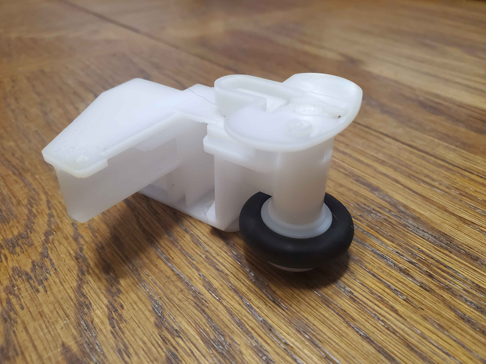

I've been preparing to start sewing lately.
I've been following these youtube videos to get me started:
I've also been collecting all sorts of things to prepare with working with fabric.
INSERT PICTURE OF STUFF I GOTI also decided to try my hand at replacing the Bobbin Winder, got overzealous, think about this write this better later, fuck my brain no worky rn

Luckily, Scott had an extra machine that he learned on that he generously donated to me. So I'm just gonna go ahead and use that instead.
We met up at Cabo Bobs cause he had a bunch of coupons for free burritos there. It was deilicious and a lot of fun.
I'm annoyed I forgot to take pictures while there though. >_<